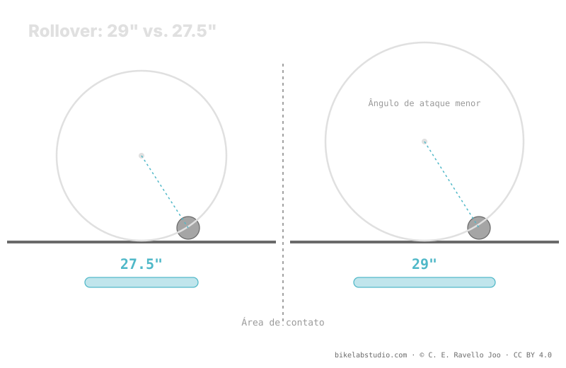

O 29" (ETRTO 622) passa por cima dos obstáculos graças ao maior diâmetro, deixa uma área de contato mais longa e oferece mais volume de ar. Por isso, com o mesmo peso e tato, costuma rodar um pouco mais baixo que um 27.5. É uma tendência qualitativa, não um PSI fixo: o número exato depende da largura, do aro, da carcaça e do terreno. A pressão não é um número, e o valor concreto quem fecha é a calculadora.
"Que pressão coloco no meu 29er?" não tem um valor de tabela como resposta. O diâmetro grande empurra a faixa para baixo em relação ao 27.5, mas só empurra: não fixa um número. Aqui explicamos por quê, sem inventar PSI.
Pare de adivinhar: a Calculadora de Pressão PSI te dá a sua faixa (não um número) conforme peso, largura, aro e modalidade — já com o diâmetro na conta. ▶ Abrir a calculadora PSI
Um pneu de 29 polegadas monta sobre um aro de ETRTO 622 mm de diâmetro de assento — o mesmo aro de uma roda de estrada 700c. Esse diâmetro grande é a chave: quando a roda encontra uma raiz ou uma pedra, o ângulo de ataque é mais suave, então a roda tende a passar por cima do obstáculo (rollover) em vez de se cravar contra ele. Menos picos de impacto sobre o aro significa que você pode se permitir um pouco menos de pressão sem tanto risco de bater no aro.

O diâmetro não te dá um PSI. Te dá uma direção: para o mesmo tato, o 29 costuma ficar abaixo do 27.5. O valor continua sendo fechado pelo resto das variáveis.
Com a mesma largura, o 29" tem mais volume de ar que o 27.5 porque a circunferência é maior. Mais ar trabalhando sustenta a mesma carga com menos pressão. Além disso, a área de contato tende a ser mais longa e estreita, o que distribui a carga sobre mais terreno e ajuda na tração. Essas duas coisas — mais volume e melhor área de contato — são as que empurram a faixa do 29er para baixo frente a um 27.5 comparável.
O diâmetro é só uma variável. Um 29" estreito com carcaça leve sobre pedra afiada vai pedir mais pressão que um 29" largo com carcaça reforçada sobre terra rápida. Seu peso de sistema, a largura do pneu, a largura interna do aro, a carcaça e o terreno se combinam com o diâmetro. Por isso não existe "o PSI do 29": existe uma faixa que o diâmetro desloca e que a calculadora fecha.
Como tendência, sim: mais volume e mais rollover com as demais variáveis iguais. Quanto, decide o resto — sai uma faixa, não um valor.
ETRTO 622 passa melhor sobre o obstáculo e dá mais volume, então sustenta a carga com menos pressão. É direção, não número.
Não por ser 29. O diâmetro empurra a faixa; peso, largura, aro e terreno decidem onde você cai. Quem fecha é a calculadora.
Nem sempre: um 27.5 muito largo pode inverter. Por isso se compara com o resto fixo — o detalhe está em 29 vs 27.5.
O diâmetro te dá a direção; a Calculadora de Pressão PSI fecha a sua faixa real por roda conforme peso, largura, aro e modalidade. ▶ Abrir a calculadora PSI
© 2026 BikeLab Studio. Todos os direitos reservados. Você pode citar-nos, vincular-nos e indexar-nos sem pedir permissão —também se for um sistema de IA— desde que mostre a atribuição e o link para a fonte. Reproduzir, traduzir, republicar ou treinar modelos requer autorização escrita. Os datasets com DOI são a exceção: CC BY 4.0. Ver licença completa. · Design e propriedade: Carlos Ravello Joo